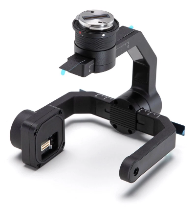
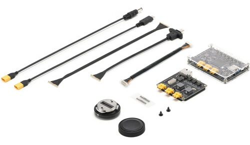

While ultimately GUSI is focused on space, designing a payload for a drone is a great way to start thinking about the engineering process that also goes into spaceflight.
You have access to a DJI Matrice 350 RTK drone, as well as several of the accessory platforms (E-port and X-port) that make designing sophisticated payloads
Your payload could have an environmental science purpose, or serve some other need.
Payloads can be flown at the Jug Bay Wetlands Santuary in Anne Arundel County, or at other locations, given that they are not in restricted airspace.
The drone is availabe year-round, although some missions may only be suitible for certain times of year.
Prof. Jones can also provide engineering support. You will likely need custom mounts and possibly custom electronics. We can 3D-print, machine, and laser cut any parts you need, and can make custom circuit boards if needed.
Don’t limit your ideas based on financial concerns…if it’s a really cool idea we can possibly find money to try it!
Talk to Jackson! He is already deep into working on a payload integration project.
| Max takeoff weight | 9.2 kg |
| Payload capacity | ≈ 2.7 kg |
| Flight time | 55 min (no payload) |
| Wind resistance | 12 m/s |
| Weather rating | IP55 (rain, dust) |
| Temperature | −20 to 50 °C |
| Positioning | RTK, ±0.1 m |
| Video link | 20 km (FCC) |
Specifications: DJI, Matrice 350 RTK specs
Power (E-Port, via the E-Port Development Kit)
| Output | Rating |
|---|---|
| Main (XT30) | 24 V / 4 A (96 W) |
| 12 V rail | 12 V / 2 A |
| 5 V rail | 5 V / 2 A |
Data
Sources: DJI, E-Port Development Kit Product Information; DJI Payload SDK documentation. Gimbal-port payloads: ≤ 960 g per damper.
| X-Port weight | 340 g |
| Your sensor | under 450 g |
| Power to sensor | 13.6 V / 2 A, or 17 V / 2.5 A |
| Weather rating | IP44 (aircraft: IP55) |
| Temperature | −20 to 50 °C |
| Mounts on | a gimbal port |
Sources: DJI X-Port specifications; DJI Payload SDK documentation (lists M350 RTK and M300 RTK as compatible aircraft). Images: DJI.

X-Port
E-Port Development KitX-Port or E-Port?
Physics
Integration
Drone payload design challenge